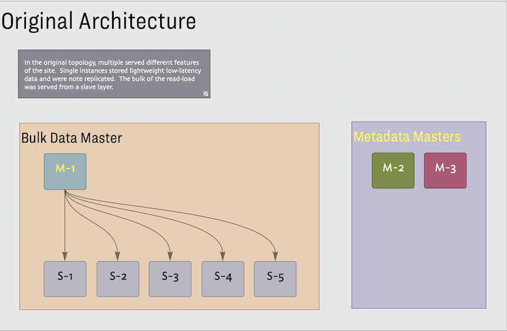
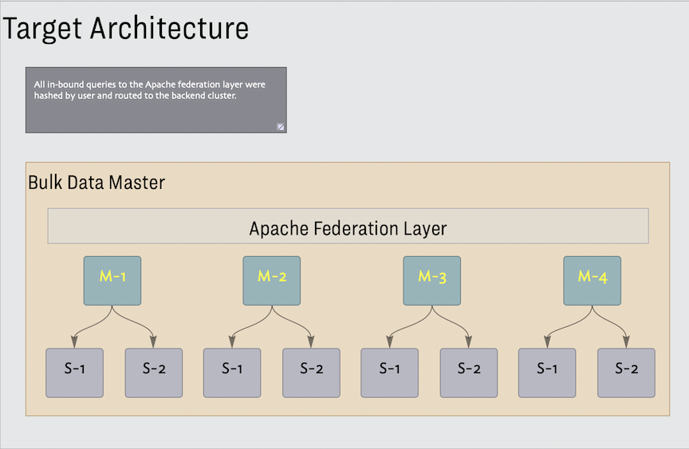

Data Migration
The database organization of the acquired company had all the warts and faults of a fast developing product. In addition to inconsistent schema changes, there were inconsistencies in data formatting which were managed by a special layer of data munging code. Additionally, different features on the site depended on different master/slave configurations. The original system used over 30 database instances. Our target was 6 clusters of master/slave triples requiring 18 databases.


⁃ This was achieved by running the Perl scrubbing code within Erlang processes as the data was read from the source infrastructure.
⁃ The Erlang VM on the processing hosts was instrumented to monitor machine memory and use an exponential back-off on the data readers to accommodate memory surges.
⁃ Data processing logs were written to Mnesia which made it easy to aggregate processing results from multiple replication hosts and simple to query
⁃ The fault tolerance capabilities of Erlang were critical, write operations were scoped to individual Erlang processes which localized failure and retry at the most granular level
⁃ At launch the original database configurations handled writes and reads were served from the new infrastructure. The migration logic maintained live parity between the two systems until stake holders were comfortable cutting writes over to the new system.
⁃ This was a fail-safe. Allow the team to cut back to the old system after writes had started flowing to the new databases.
Query Generator
This code needed to map incoming URL query strings into the underlying - federation aware - SQL. In the simple case a user was accessing their own data and this was a single query mapped to a single cluster. Accessing tagged data from a user’s social network would require multiple concurrent queries. There are a few more scenarios which I can no longer recall. The query generator logic was executed in the Apache Servers providing the Federation Layer.